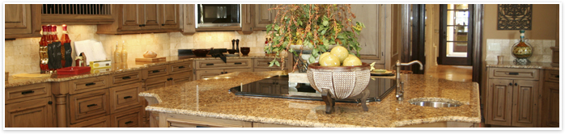

Commercial and Residential Disaster Recovery Services

Our Services
Here is a list of the services we provide:
- Scope of Damage Walkthroughs – We provide on-site scope of damage walkthroughs with Insurance Adjusters and their experts. The result? We are able to present a comprehensive list of all the replacement items and repairs you are rightfully entitled to.
- Damage Repair Assessments – Once we have a comprehensive list of all the items and repairs you are entitled to, we provide a fair and accurate estimate of the total settlement you should receive based on the insurance premiums you’ve paid.
- Evaluation of Your Insurance Company’s Offer – Once we’ve prepared our estimate, we then show you the items your insurance company has left out. This helps you see all the differences between our quote and your insurance company’s.
- Strategy Sessions – We then create a strategy designed to help you get everything the Insurance Company left out. We know how to present the facts of your individual situation to help you increase the probability of a successful claims outcome.
- Policy Interpretation, Rules, Regulations, and Representation – We work with the best Public Adjusting firms in Southern California with a proven track record of delivering results for their clients.
- Repairing Your Property – After the settlement, we’ll meet with you to document what repairs and replacements make sense in your situation. Then we’ll roll up our sleeves and get to work restoring your home and personal property with a guaranteed completion date and an unlimited “No Smoke Odor Warranty.”
Start to finish, we’re there to help you get the most favorable outcome possible. With that in mind, please call us at
(951) 634-2888. We look forward to talking with you!